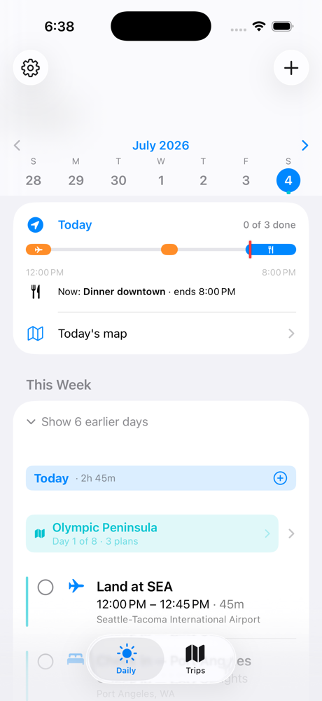
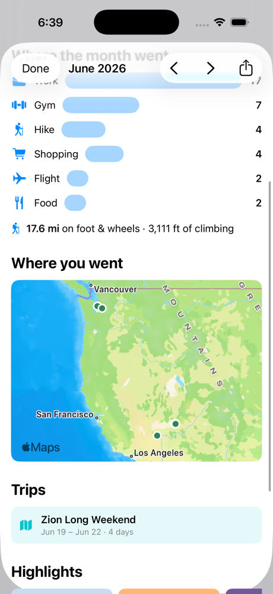
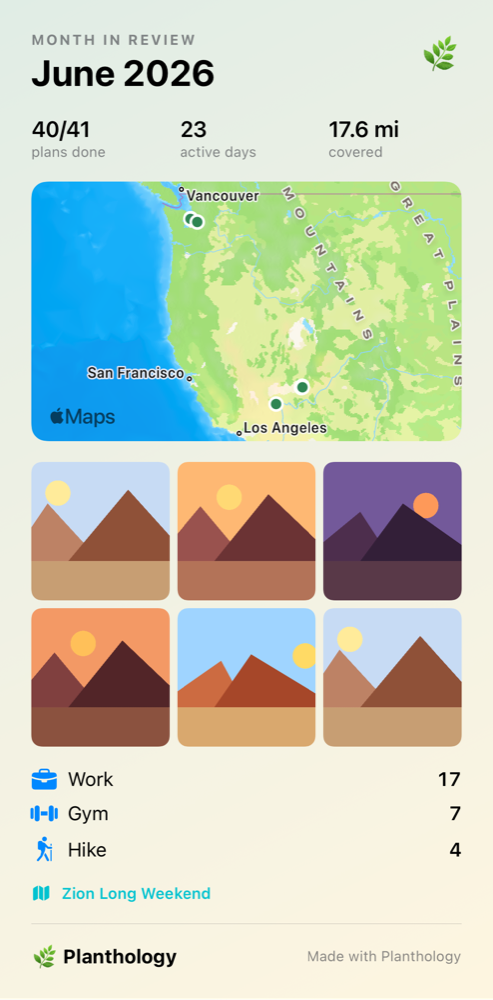
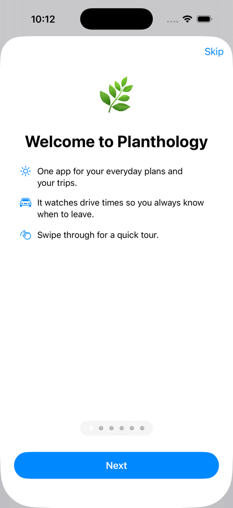

A calendar tells you when things are. Planthology tells you whether your day actually works; a leave-by time for every leg of it, warnings when plans don't physically fit, and your workweek and your trips in one agenda.
⚠️ Travel times and leave-by estimates are best guesses; always double-check routes and times with a maps app before leaving. Full disclaimer
iOS 26.4+ · iPhone · free of ads and tracking

Most planners store your plans. Planthology pressure-tests them; against the map, the clock, and each other.
Not one alert for one event; your day as a chain. The first leg starts from home base (or tonight's lodging on a trip), each leg starts where the last one ended, and long gaps route you home in between. "Leave by 11:23 AM · 3h 37m drive" sits between every pair of plans, in advance. A notification tells you when to go, with an optional countdown in the Dynamic Island.
A calendar will happily book dinner across town ten minutes after a hike ends. Planthology knows the drive times, estimates a hike's duration from its mileage and elevation, and flags tight days in orange and impossible ones in red; before you live them.
A plan is an event, a task, and a place in one. Your day shows what's done, what's up next and in how long, and plans complete themselves when you arrive. Recurring events, overlap warnings, a live progress bar through today; and reminders for things without an address.
Build itineraries with lodging, flights, hikes, and food. Every day gets a map and drive legs between stops; starting from wherever you're sleeping that night. Import GPX routes or search National Park Service trails to fill in hike stats automatically.
Share a trip view-only or collaborative. It's end-to-end encrypted, with the key riding only in the invite; the server stores ciphertext it can't read. And a shared trip carries lodging, routes, photos, and done-state, not just time blocks.
Month in Review and Trip Review turn your plans and photos into stats, a pin map of everywhere you went, and a shareable card sized for Instagram or Messages. A journal you produce just by living your plans.
Feature by feature, it can sound like it. Side by side, it doesn't. Theirs is an alert; ours is an itinerary.
A calendar Fires one time-to-leave alert per event, on the day, from wherever your phone happens to be; and only if you typed in an address.
Planthology Prints a leave-by time, drive time, and distance between every pair of plans for the entire day — in advance.
A calendar Has no opinion. Book dinner across town ten minutes after a hike ends and it says nothing.
Planthology Checks whether the day is physically possible — tight slack in orange, impossible in red, total time planned per day.
A calendar Splits your day across two apps that don't talk: events you can't check off, reminders that know nothing about travel.
Planthology One object per plan: event, task, and place; with "up next", auto-complete when you arrive, and a leave-by countdown in the Dynamic Island.
A calendar Shares time blocks, and has no idea where you're sleeping.
Planthology Shares whole trips — lodging, routes, photos, done-state — end-to-end encrypted, so not even the server can read them.
A calendar Leaves the past as a graveyard of gray boxes.
Planthology Turns it into a Month in Review — plans done, miles on foot, a map of where you went, your photos.
A calendar tells you when things are. Planthology tells you whether your day actually works; and when to leave for every piece of it.
Real screens from the app.



Found a bug? Want a feature? I read everything.
Something broken or behaving oddly? File it on GitHub; screenshots help a ton.
Question, not sure it's a bug, or anything else on your mind; open a general issue.
Support page: planthology support & FAQ · Privacy: privacy policy · Feedback about Snowball Budget has its own links on its page.
What I'm building. More on the way.
An iOS planner that unifies everyday scheduling and trip planning, with drive-time intelligence, encrypted trip sharing, and shareable month recaps.
A calm monthly money planner: budget in the style that fits you; zero-based, 50/30/20, kakeibo, or envelopes; log expenses in two taps, grow a savings jar, and snowball your debt to a real debt-free date. No accounts, no servers; everything stays on your device.
Hi, I'm Mitchell Isler — a software engineer who builds apps to solve his own problems first and polishes them until they're worth sharing. Planthology started as a vacation itinerary tool and grew into the planner I use for everything, every day.
I care about software that respects people: local-first data, end-to-end encryption where your information leaves the device, no ads, no tracking.
Want to work together or see more? Find me on GitHub, or open an issue to get in touch.